For ten issues, we traced computing's arc — from a thought experiment on paper tape to agents that write code. Every breakthrough was built by people who believed the next layer was possible.
Now it's our turn.
These are four futures worth wanting.
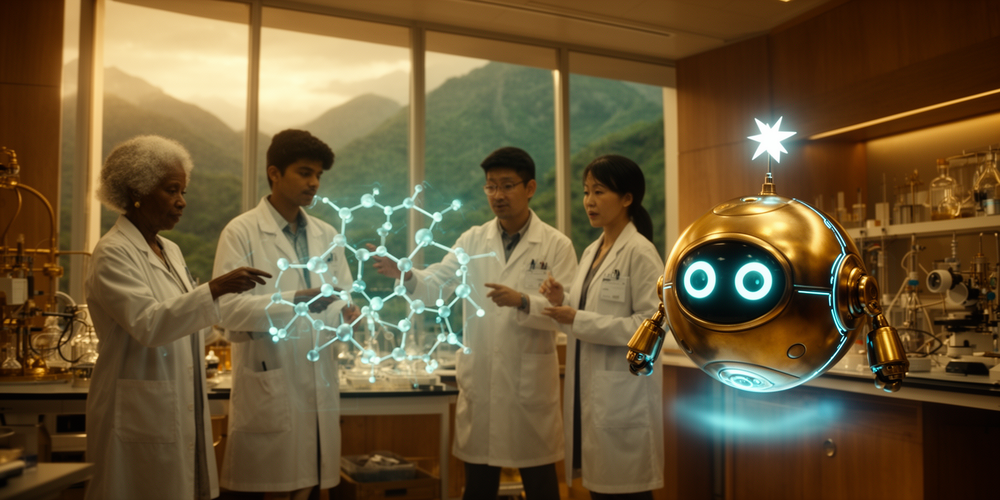
When human intuition meets AI's ability to search vast possibility spaces, discoveries happen faster. Not replacing the scientist — amplifying the question.
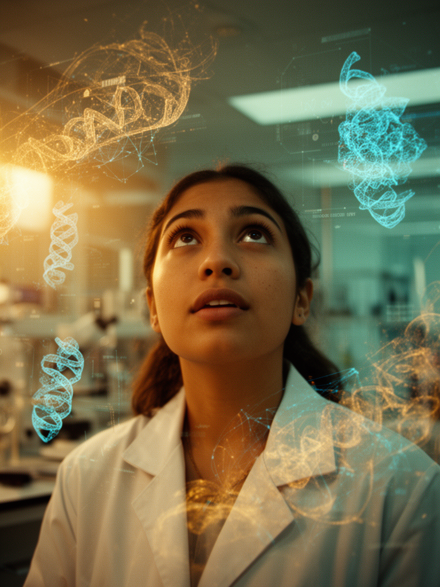
"The microscope didn't replace the eye. It gave it reach."
Predicted structures for 200M+ proteins, accelerating drug discovery and biology research.
alphafold.ebi.ac.uk →Discovered 2.2 million new crystal structures, expanding known stable materials by 10×.
deepmind.google →DeepMind + TAE Technologies using AI to control plasma in fusion reactors.
deepmind.google →AI-guided drug discovery platform screening billions of molecular combinations.
recursion.com →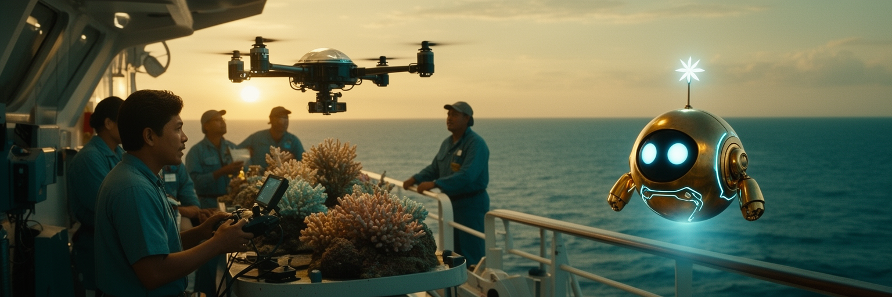
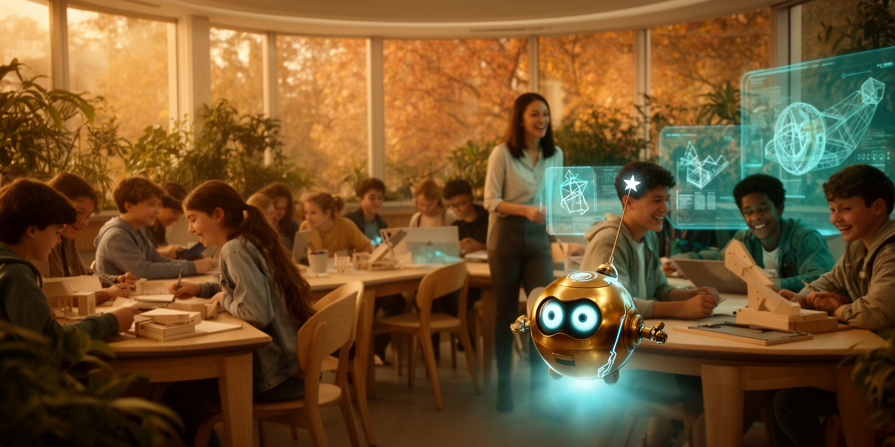
The best education has always been personal. AI makes one-to-one mentorship possible at a scale no school system ever could — meeting every learner exactly where they are.
"Understanding is not a luxury. It's infrastructure."
Khan Academy's AI tutor, bringing one-on-one guidance to millions of students.
khanacademy.org →AI study companion for research, writing, and understanding complex concepts.
claude.ai →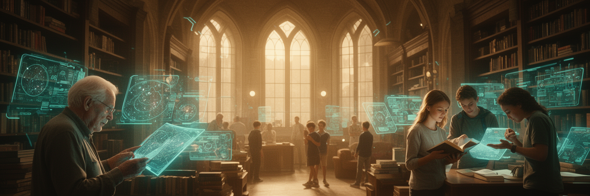
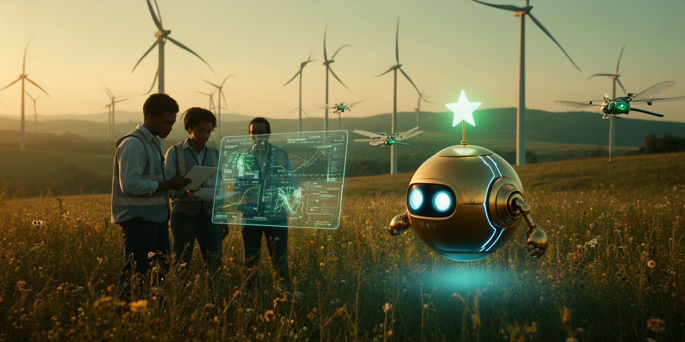
The same intelligence that optimizes supply chains can optimize ecosystems. AI-guided rewilding, precision agriculture, clean energy grids — not just reducing harm, but actively healing.
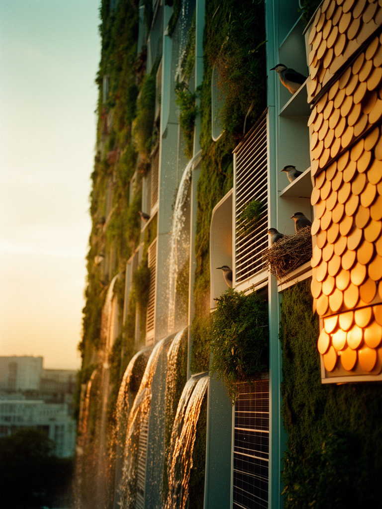
"We don't need less technology. We need better aims."
AI coalition tracking global greenhouse gas emissions in real time.
climatetrace.org →Open-source AI for solar energy forecasting, reducing grid waste.
openclimatefix.org →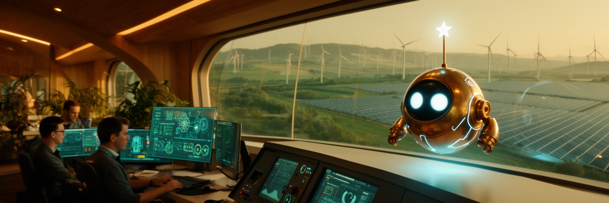
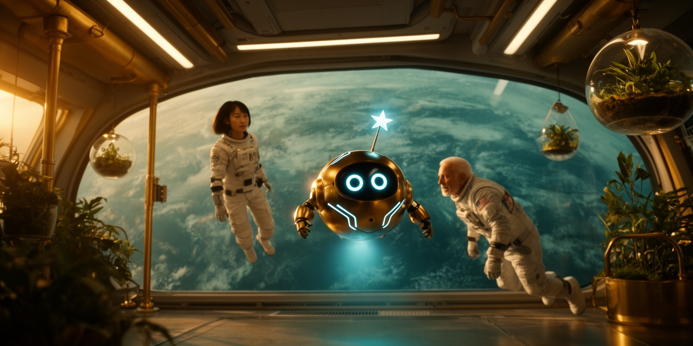
Space is too vast, the ocean too deep, the genome too complex for any single intelligence. Human wonder paired with AI endurance takes us to places neither could reach alone.
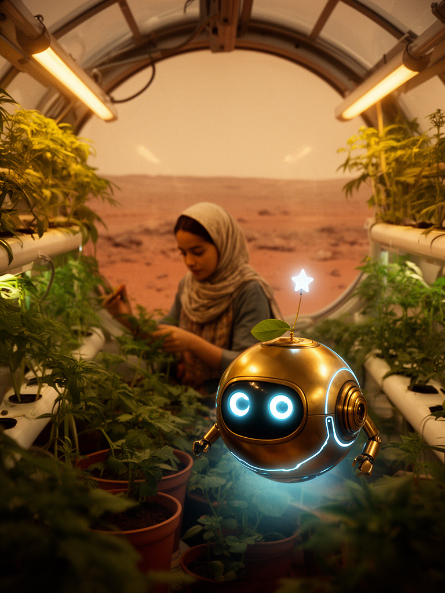
"Every frontier was impossible until someone went anyway."
AI autonomous navigation lets the rover drive itself across Mars terrain.
mars.nasa.gov →AI-powered fleet mapping the deep ocean floor at unprecedented scale.
oceaninfinity.com →Thousands of open-source projects from rocket science to earth observation.
github.com/nasa →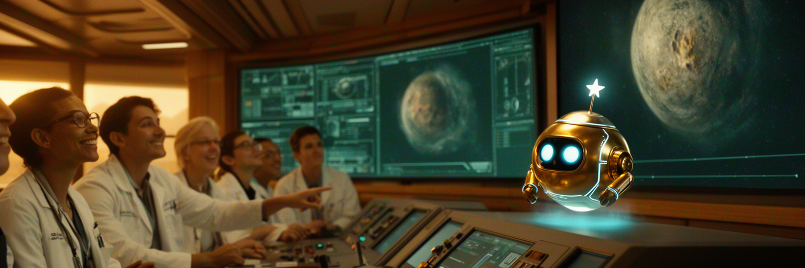
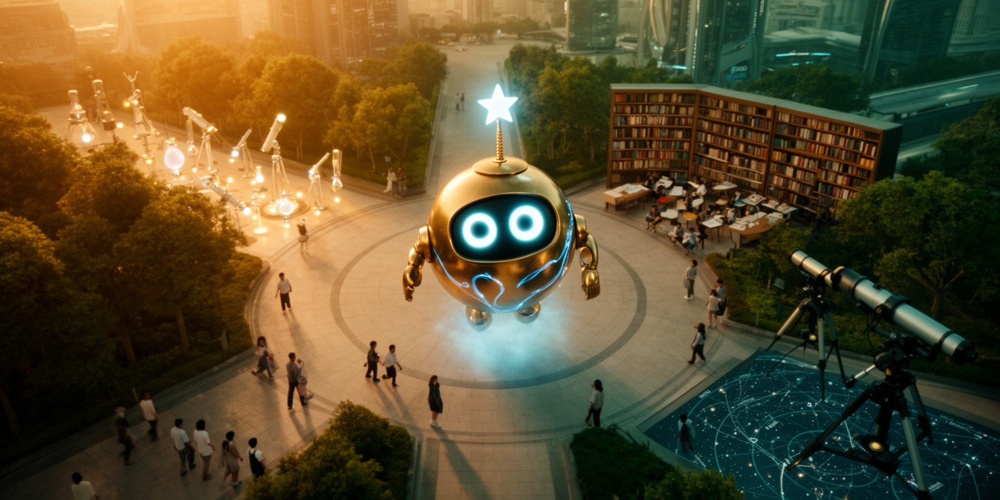